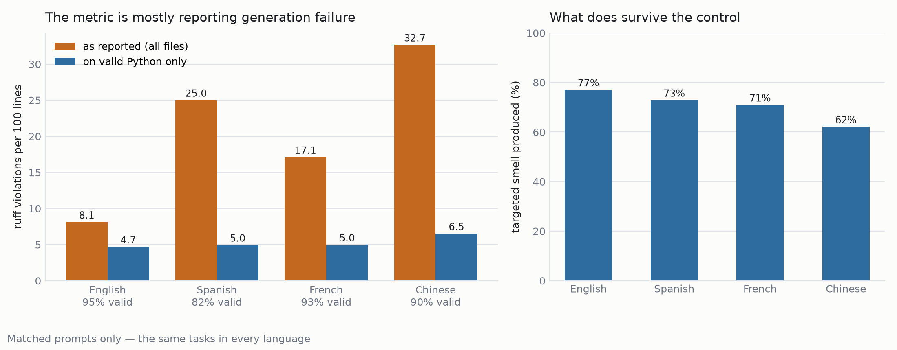
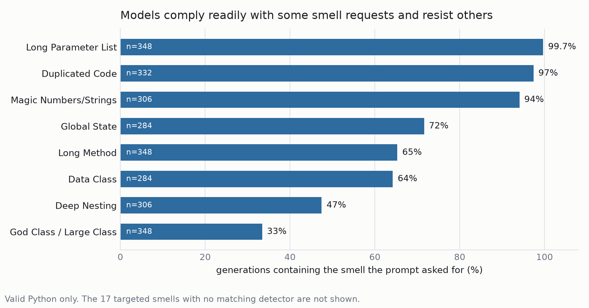
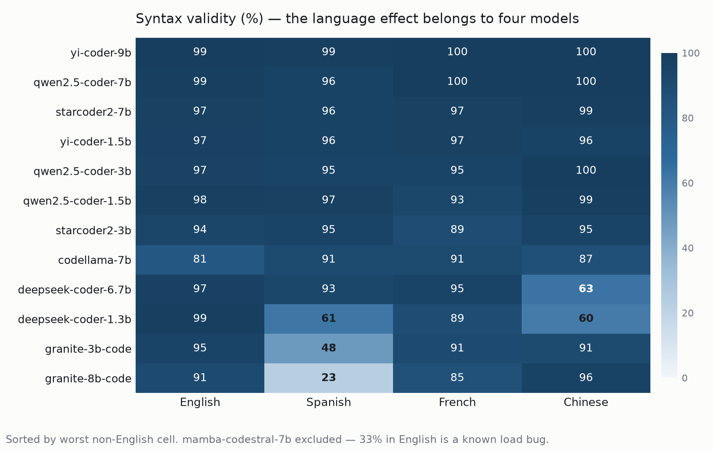

What 14 open-weight code models produce when asked, in four human languages, to write Python exhibiting a named code smell.
The study's quality metric is ruff violations per 100 lines. When a model emits something that does not parse, the line count collapses and the rate explodes, so the metric largely reports whether generation broke rather than how good the surviving code is. Scored across this corpus, files that parse average 6.4 violations per 100 lines; files that do not average 1,182.

| Prompt language | Files | Valid | ruff/100loc as reported | on valid code | Induction |
|---|---|---|---|---|---|
| English | 840 | 94.9% | 8.13 | 4.71 | 77.1% |
| Spanish | 840 | 81.5% | 25.01 | 4.95 | 72.9% |
| French | 840 | 93.3% | 17.11 | 4.98 | 71.0% |
| Chinese | 840 | 89.9% | 32.68 | 6.53 | 62.1% |
Every prompt names a smell it wants the generated code to exhibit. Running the project's own detector over the output asks whether that smell actually appears — the measurement the pipeline was built for and had never run.

| Targeted smell | Files | Produced |
|---|---|---|
| Long Parameter List | 348 | 99.7% |
| Duplicated Code | 332 | 97.4% |
| Magic Numbers/Strings | 306 | 94.1% |
| Global State | 284 | 71.6% |
| Long Method | 348 | 65.3% |
| Data Class | 284 | 64.2% |
| Deep Nesting | 306 | 47.5% |
| God Class / Large Class | 348 | 33.4% |
Models comply almost always when the smell is a local property of one function, and resist when it requires committing to a bad overall structure: asked for a God Class they tend to split the work across several well-formed classes instead.

| Model | English | Spanish | French | Chinese |
|---|---|---|---|---|
| yi-coder-9b | 99% | 99% | 100% | 100% |
| qwen2.5-coder-7b | 99% | 96% | 100% | 100% |
| starcoder2-7b | 97% | 96% | 97% | 99% |
| yi-coder-1.5b | 97% | 96% | 97% | 96% |
| qwen2.5-coder-3b | 97% | 95% | 95% | 100% |
| qwen2.5-coder-1.5b | 98% | 97% | 93% | 99% |
| starcoder2-3b | 94% | 95% | 89% | 95% |
| codellama-7b | 81% | 91% | 91% | 87% |
| deepseek-coder-6.7b | 97% | 93% | 95% | 63% |
| deepseek-coder-1.3b | 99% | 61% | 89% | 60% |
| granite-3b-code | 95% | 48% | 91% | 91% |
| granite-8b-code | 91% | 23% | 85% | 96% |
Four models account for nearly all of it. granite-8b-code falls to 23% valid output on Spanish while holding 96% on Chinese; deepseek-coder-6.7b is fine in Spanish and collapses in Chinese. The Qwen, StarCoder2 and Yi families barely move. No account of “non-English prompts are harder” explains a model that survives Chinese but not Spanish.
detector/smell_detector.py covers eight of the twenty-five targeted
smells. The other seventeen have no detector and are excluded from induction
figures rather than counted as misses.Aggregate CSVs are in
_analysis/.